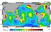

amphidromic-points

Definition: An amphidromic point, also called a tidal node, is a geographical location which has zero tidal amplitude for one harmonic constituent of the tide. The tidal range (the peak-to-peak amplitude, or the height difference between high tide and low tide) for that harmonic constituent increases with distance from this point, though not uniformly. As such, the concept of amphidromic points is crucial to understanding tidal behaviour. The term derives from the Greek words amphi ("around") and dromos ("running"), referring to the rotary tides which circulate around amphidromic points.Amphidromic points occur because interference within oceanic basins, seas and bays, combined with the Coriolis effect, creates a wave pattern — called an amphidromic system — which rotates around the amphidromic point. At the amphidromic points of the dominant tidal constituent, there is almost no vertical change in sea level from tidal action; that is, there is little or no difference between high tide and low tide at these locations. There can still be tidal currents since the water levels on either side of the amphidromic point are not the same. A separate amphidromic system is created by each periodic tidal component.In most locations the "principal lunar semi-diurnal", known as M2, is the largest tidal constituent. Cotidal lines connect points which reach high tide at the same time and low tide at the same time. In Figure 1, the low tide lags or leads by 1 hr 2 min from its neighboring lines. Where the lines meet are amphidromes, and the tide rotates around them; for example, along the Chilean coast, and from southern Mexico to Peru, the tide propagates southward, while from Baja California to Alaska the tide propagates northward.
Source: Wikipedia
Wikipedia Page (Something wrong with this association? Let us know.)
Wikidata Page (Something wrong with this association? Let us know.)
Occurs in: